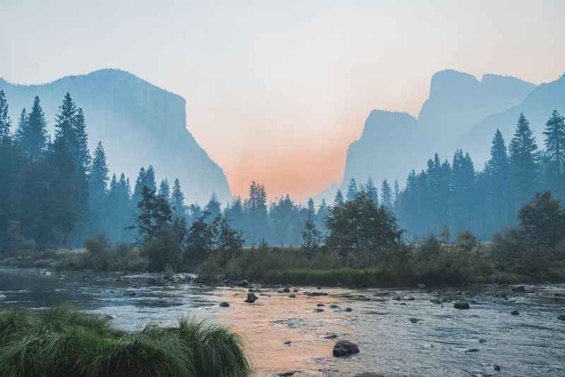

图片支持
Markdown 中可以直接引用同目录下的资源文件，构建时自动复制到输出目录。
风景照片

宁静的湖水倒映着远山，这是 Unsplash 上的一张经典风景照。
雪山星空
冬夜雪山上的银河，长曝光拍摄的效果令人震撼。
音频支持
使用 HTML5 <audio> 标签嵌入音频文件：
音频文件同样放在文章资源目录下，构建时自动复制。
视频支持
使用 HTML5 <video> 标签嵌入视频：
视频文件较大，建议使用
preload="metadata"避免自动加载。
资源目录约定
blog-forge 采用 约定优于配置 的方式处理多媒体资源：
- 文章路径：
content/posts/2026-05-25-multimedia-demo.md - 资源目录：
content/posts/2026-05-25-multimedia-demo/ - Markdown 引用：
 - 全局资源：放在
static/目录，适用于全站共享的文件
构建时，文章资源目录的内容会完整复制到输出目录，保持相对路径可用。